<title>Curious Part Ideas</title>
<meta name="claude:viewport-fit-sides" content="cover">
<link rel="preconnect" href="https://fonts.googleapis.com">
<link rel="preconnect" href="https://fonts.gstatic.com" crossorigin>
<link rel="stylesheet" href="https://fonts.googleapis.com/css2?family=Ysabeau+Office:wght@400;500;600&display=swap">
<style>
  /* Layout: one column like a scroll. First the part as it is today (grey ink reading glasses on a
     notebook), then three ideas for the About page's "Curious about the science?" part, each a
     card with a close-up of its painting and the real page (laptop beside phone), its score and
     what still holds it back. The site's own paper and ink, one gold for the recommendation. */
  :root {
    --paper: #f4f0e6;
    --card: #faf7f0;
    --ink: #171512;
    --ink-soft: #5d574d;
    --rule: #d9d2c1;
    --gold: #7a5a14;
    --gold-bg: #f1e4c4;
    --ask: #1f3d2b;
    --ask-bg: #e3ebdf;
    --shot-bg: #f3efe4;
    --title: "Ysabeau Office", "Iowan Old Style", Georgia, serif;
    --body: system-ui, -apple-system, "Segoe UI", Roboto, sans-serif;
  }
  @media (prefers-color-scheme: dark) {
    :root:not([data-theme="light"]) {
      --paper: #1b1915;
      --card: #24211c;
      --ink: #f1ece0;
      --ink-soft: #b6ae9e;
      --rule: #3a362e;
      --gold: #f0d39a;
      --gold-bg: #3d3220;
      --ask: #cfe3c6;
      --ask-bg: #2b3a2c;
      --shot-bg: #2a2620;
      color-scheme: dark;
    }
  }
  :root[data-theme="dark"] {
    --paper: #1b1915;
    --card: #24211c;
    --ink: #f1ece0;
    --ink-soft: #b6ae9e;
    --rule: #3a362e;
    --gold: #f0d39a;
    --gold-bg: #3d3220;
    --ask: #cfe3c6;
    --ask-bg: #2b3a2c;
    --shot-bg: #2a2620;
    color-scheme: dark;
  }
  body {
    background: var(--paper);
    color: var(--ink);
    font: 17px/1.5 var(--body);
  }
  .wrap {
    max-width: 980px;
    margin: 0 auto;
    padding-left: max(16px, env(safe-area-inset-left, 0px));
    padding-right: max(16px, env(safe-area-inset-right, 0px));
    padding-block: 32px 72px;
    display: grid;
    gap: 28px;
  }
  header {
    display: grid;
    gap: 10px;
  }
  h1 {
    font: 600 38px/1.08 var(--title);
    margin: 0;
    text-wrap: balance;
  }
  .lede {
    margin: 0;
    max-width: 38em;
    color: var(--ink-soft);
  }
  .note {
    margin: 0;
    max-width: 40em;
    padding: 12px 14px;
    border-radius: 10px;
    border: 1px dashed var(--rule);
    font-size: 15px;
    color: var(--ink-soft);
  }
  .card {
    background: var(--card);
    border: 1px solid var(--rule);
    border-radius: 14px;
    padding: 18px;
    display: grid;
    gap: 14px;
  }
  .card h2 {
    font: 600 26px/1.2 var(--title);
    margin: 0;
    display: flex;
    flex-wrap: wrap;
    align-items: baseline;
    gap: 6px 12px;
    text-wrap: balance;
  }
  .tag {
    font: 700 22px/1 var(--title);
    color: var(--ink);
  }
  .badge {
    font: 600 13px/1 var(--body);
    color: var(--gold);
    background: var(--gold-bg);
    padding: 5px 9px;
    border-radius: 99px;
  }
  .card ul.notes {
    margin: 0;
    padding-left: 1.2em;
    display: grid;
    gap: 4px;
    max-width: 44em;
  }
  .score {
    margin: 0;
    color: var(--ink-soft);
    font-size: 15px;
    max-width: 44em;
  }
  .score b {
    color: var(--ink);
  }
  .shots {
    display: grid;
    grid-template-columns: 3fr 1fr;
    gap: 12px;
    align-items: start;
  }
  figure {
    margin: 0;
    display: grid;
    gap: 6px;
    min-width: 0;
  }
  figure img {
    display: block;
    width: 100%;
    height: auto;
    max-width: 100%;
    border-radius: 8px;
    border: 1px solid var(--rule);
    background: var(--shot-bg);
  }
  figcaption {
    font-size: 14px;
    color: var(--ink-soft);
  }
  .stack {
    display: grid;
    gap: 12px;
    min-width: 0;
  }
  .section-title {
    font: 600 28px/1.15 var(--title);
    margin: 12px 0 0;
  }
  .ask {
    background: var(--ask-bg);
    border-radius: 14px;
    padding: 18px;
    display: grid;
    gap: 10px;
  }
  .ask h2 {
    font: 600 24px/1.2 var(--title);
    margin: 0;
    color: var(--ask);
  }
  .ask ol {
    margin: 0;
    padding-left: 1.4em;
    display: grid;
    gap: 8px;
    max-width: 44em;
  }
  details.earlier summary {
    cursor: pointer;
    font: 600 20px/1.3 var(--title);
  }
  details.earlier summary:focus-visible {
    outline: 2px solid var(--gold);
    outline-offset: 4px;
    border-radius: 6px;
  }
  details.earlier[open] summary {
    margin-bottom: 8px;
  }
  footer {
    font-size: 14px;
    color: var(--ink-soft);
    max-width: 44em;
  }
  @media (max-width: 640px) {
    h1 {
      font-size: 32px;
    }
    .shots {
      grid-template-columns: 1fr;
    }
    .shots > figure.phone {
      max-width: 300px;
    }
  }
  /* B and C side by side (Mo asked to compare them): two columns, B left, C right, at every width,
     so the same view of each sits level. */
  .pair {
    display: grid;
    grid-template-columns: repeat(2, minmax(0, 1fr));
    gap: 10px;
    align-items: start;
  }
  .pair-label {
    font: 600 18px/1.2 var(--title);
    color: var(--ink);
    margin: 0 0 2px;
  }
  .pair video,
  .compare video {
    display: block;
    width: 100%;
    height: auto;
    max-width: 100%;
    border-radius: 8px;
    border: 1px solid var(--rule);
    background: var(--shot-bg);
  }
  .stack-wide {
    display: grid;
    gap: 14px;
  }
  .compare h3 {
    font: 600 20px/1.25 var(--title);
    margin: 6px 0 0;
  }
  .verdict {
    margin: 0;
    padding-left: 1.2em;
    display: grid;
    gap: 6px;
    max-width: 44em;
  }
  /* The close-up of an idea's four small paintings, on the page's paper. */
  figure.strip img {
    border-radius: 8px;
    background: var(--shot-bg);
  }
</style>

<main class="wrap">
  <header>
    <h1>"Curious about the science?" in California colour</h1>
    <p class="lede">You picked B. It's built: the tide pool is now on the page, on my computer. It's first below. The three ideas follow.</p>
    <p class="note">B is shot on the built site. The other shots are mockups (the painting dropped into the live page in the browser). The heading, the words and the two buttons don't change. Nothing is live yet.</p>
  </header>

  <h2 class="section-title">B, built</h2>
  <section class="card compare" aria-labelledby="built">
    <h2 id="built">At the tide pool, with a guide</h2>
    <ul class="notes">
      <li>A little bigger than the glasses were, so the two people aren't tiny.</li>
      <li>It still appears softly as you scroll to it, like the page's other paintings.</li>
    </ul>

    <h3>Laptop</h3>
    <div class="stack-wide">
      <figure>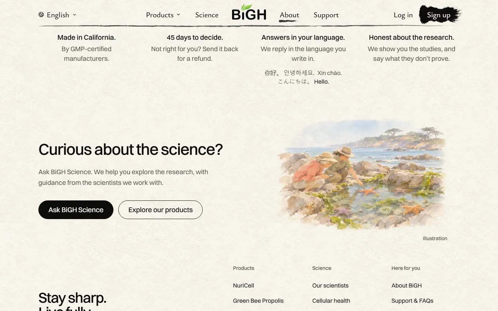</figure>
      <figure><figcaption class="pair-label">Scrolling down to it (the film loops)</figcaption><video src="web/film-built-desk.mp4" width="1280" height="800" autoplay muted loop playsinline aria-label="B built, on a laptop: scrolling down from the promises, the tide pool painting appears"></video></figure>
      <figure><figcaption class="pair-label">Small laptop</figcaption>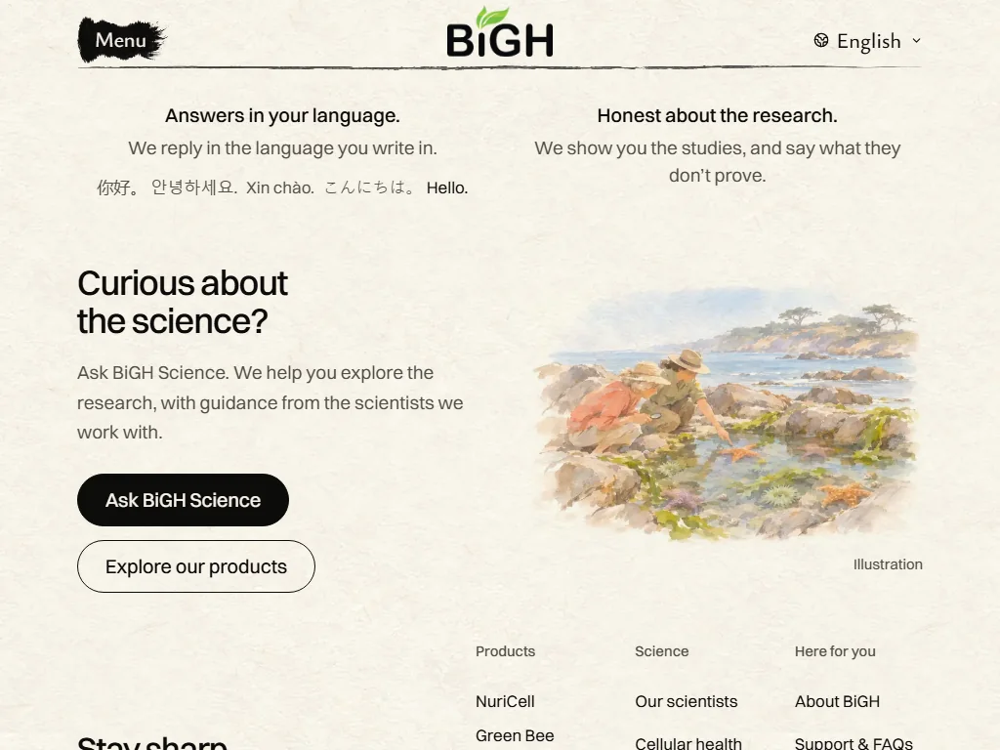</figure>
    </div>

    <h3>Tablet and phone</h3>
    <div class="shots">
      <figure>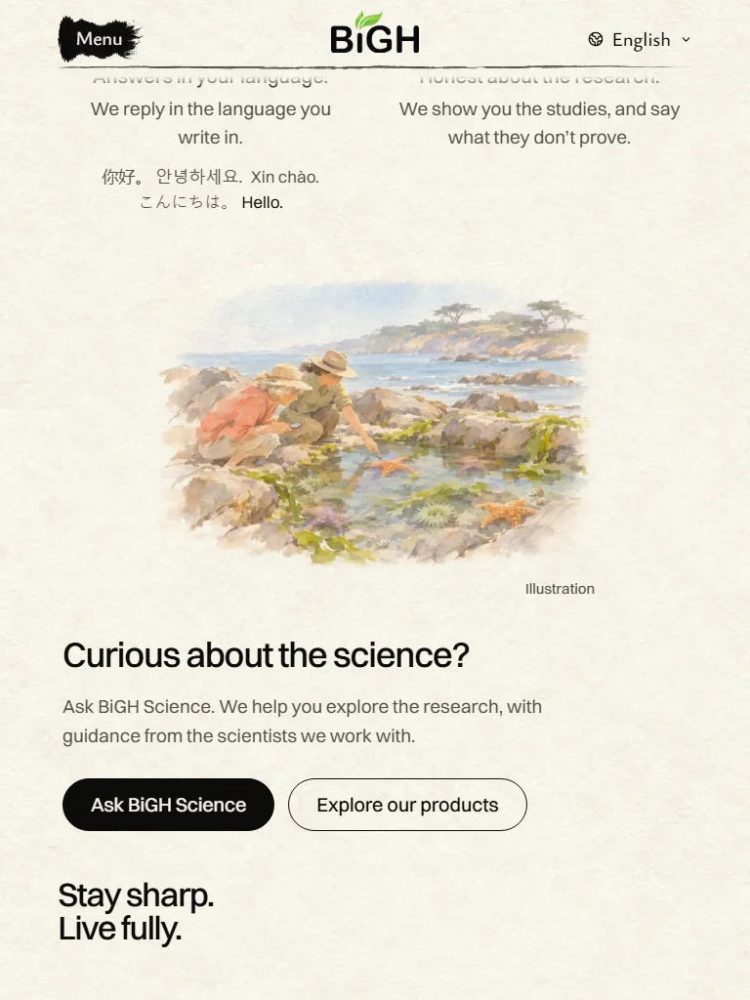<figcaption>Tablet</figcaption></figure>
      <figure class="phone">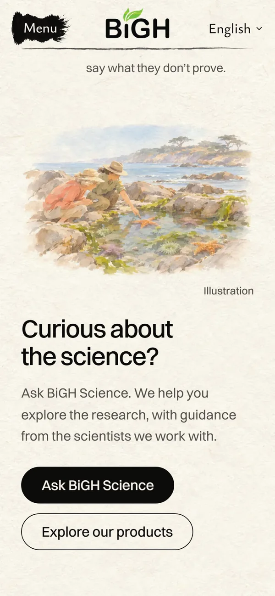<figcaption>Phone</figcaption></figure>
    </div>
    <div class="pair">
      <figure><figcaption class="pair-label">Phone, scrolling</figcaption><video src="web/film-built-phone.mp4" width="390" height="844" autoplay muted loop playsinline aria-label="B built, on a phone: scrolling down, the tide pool painting appears"></video></figure>
    </div>

    <p class="score"><b>My score: 8.5/10</b>, the same as the mockup (it looks just like it). Holding it back: on a phone the two people are small.</p>
  </section>

  <h2 class="section-title">Live today</h2>
  <section class="card" aria-labelledby="today">
    <h2 id="today">Grey ink reading glasses on a notebook</h2>
    <ul class="notes">
      <li>The last grey painting on the About page, right after the coloured promise dots.</li>
    </ul>
    <div class="shots">
      <figure>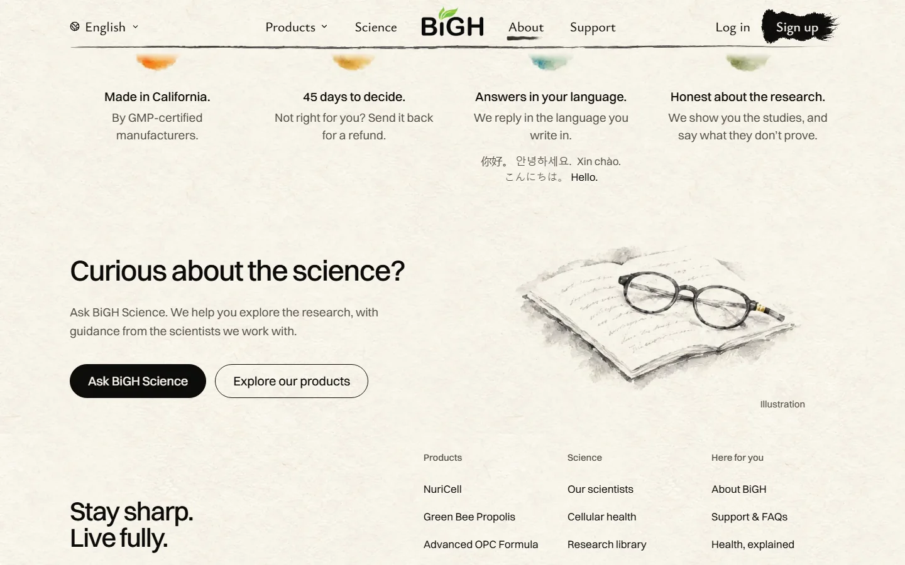<figcaption>Laptop, today</figcaption></figure>
      <figure class="phone">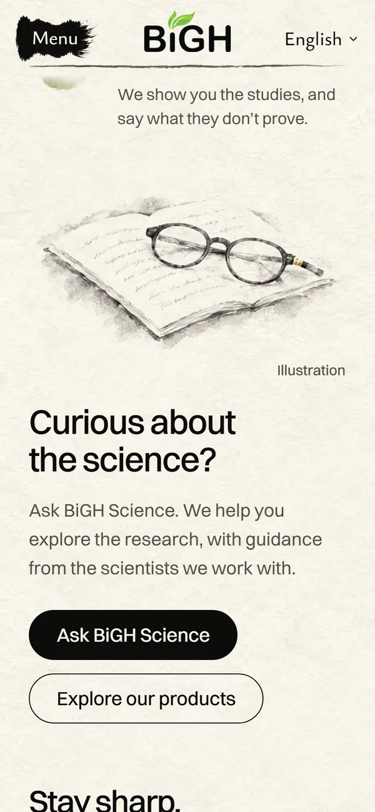<figcaption>Phone, today</figcaption></figure>
    </div>
  </section>

  <h2 class="section-title">Three ideas</h2>

  <section class="card" aria-labelledby="a">
    <h2 id="a"><span class="tag">A</span> The same glasses, in colour</h2>
    <ul class="notes">
      <li>The same painting: tortoiseshell glasses, cream pages, blue-grey handwriting, a sage-green cover.</li>
      <li>The smallest change, the way the sequoia and the promise dots were done.</li>
    </ul>
    <figure class="strip">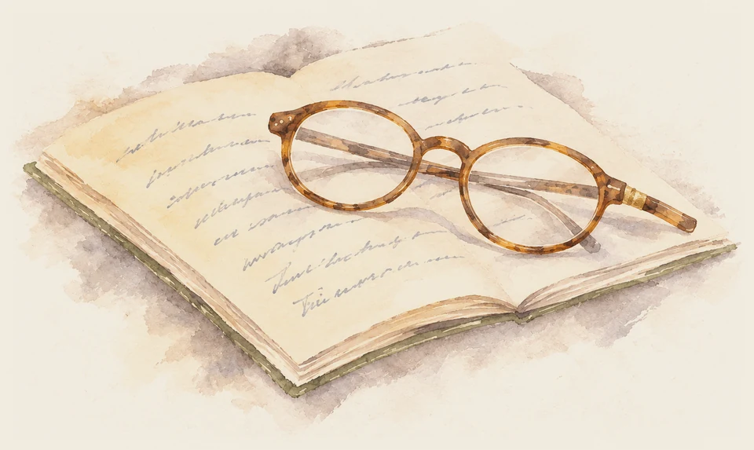<figcaption>Close-up</figcaption></figure>
    <p class="score"><b>My score: 8/10.</b> Warm and calm, and it matches the parts above. Holding it back: it still only says "reading". Nobody is asking or answering.</p>
    <div class="shots">
      <figure>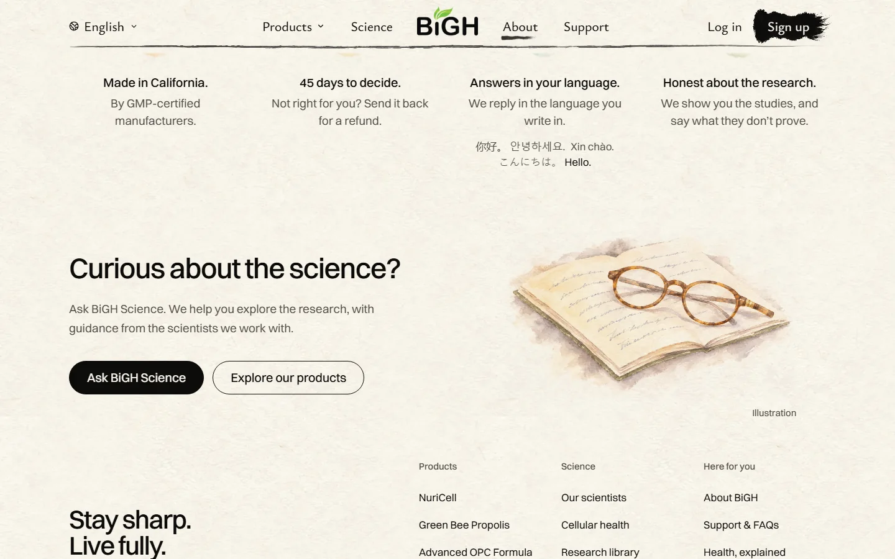<figcaption>Laptop</figcaption></figure>
      <figure class="phone">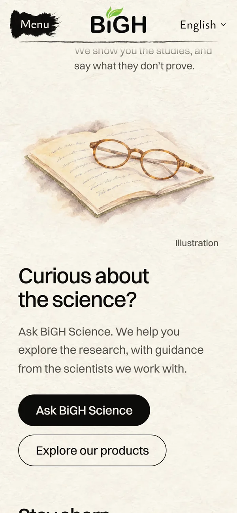<figcaption>Phone</figcaption></figure>
    </div>
  </section>

  <section class="card" aria-labelledby="b">
    <h2 id="b"><span class="tag">B</span> At the tide pool, with a guide <span class="badge">My pick</span></h2>
    <ul class="notes">
      <li>Low tide on the Monterey coast. A curious older woman looks into a tide pool with a hand lens.</li>
      <li>A park naturalist kneels beside her and points to a sea star.</li>
      <li>It shows the words: you're curious, and someone who knows helps you look.</li>
    </ul>
    <figure class="strip">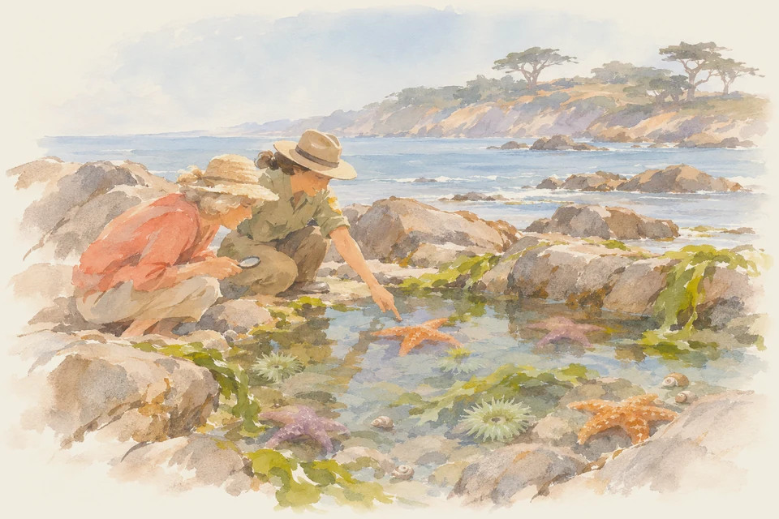<figcaption>Close-up</figcaption></figure>
    <p class="score"><b>My score: 8.5/10.</b> The only picture that tells the part's story, and the most California. Holding it back: it's the busiest painting in that corner, and on a phone the two people are small.</p>
    <div class="shots">
      <figure><figcaption>Laptop</figcaption></figure>
      <figure class="phone"><figcaption>Phone</figcaption></figure>
    </div>
  </section>

  <section class="card" aria-labelledby="c">
    <h2 id="c"><span class="tag">C</span> A field notebook by a creek</h2>
    <ul class="notes">
      <li>A naturalist's notebook open on a sunny rock by a foothill creek.</li>
      <li>Sketches of a poppy and an oak leaf, the real ones beside it, a hand lens, and the glasses.</li>
    </ul>
    <figure class="strip">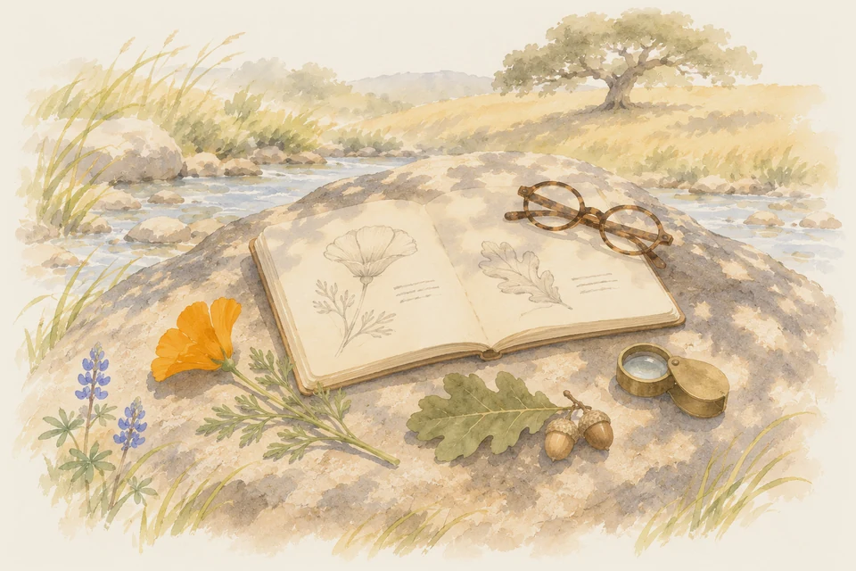<figcaption>Close-up</figcaption></figure>
    <p class="score"><b>My score: 7.5/10.</b> Pretty and very California. Holding it back: lots of small objects, so it reads busy, and like A there's nobody to ask.</p>
    <div class="shots">
      <figure>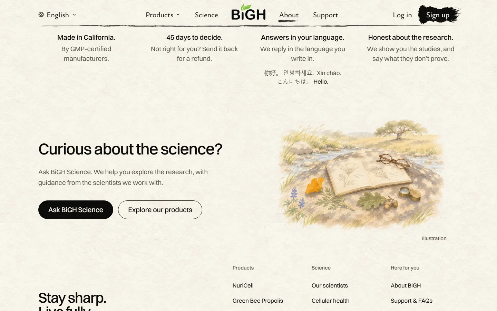<figcaption>Laptop</figcaption></figure>
      <figure class="phone">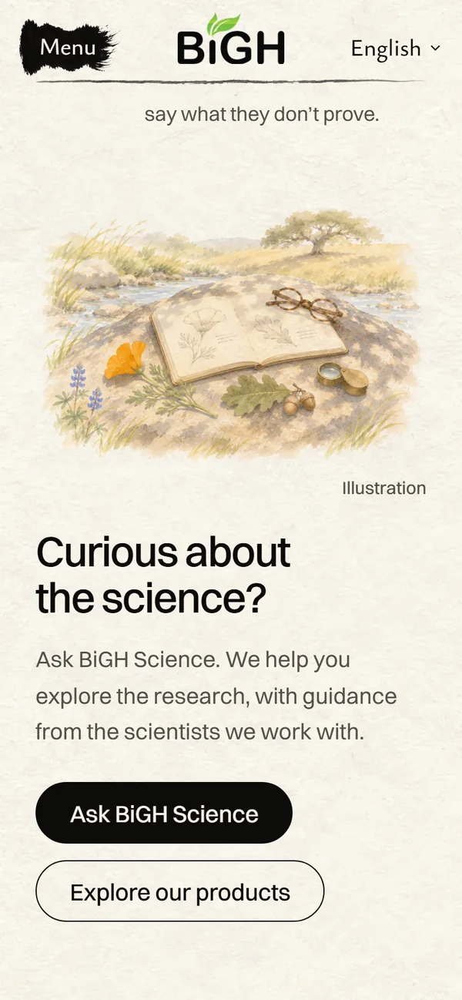<figcaption>Phone</figcaption></figure>
    </div>
  </section>

  <section class="ask" aria-labelledby="ask">
    <h2 id="ask">Which one?</h2>
    <ol>
      <li>Reply <b>A</b>, <b>B</b> or <b>C</b>. Or tell me something else to try.</li>
      <li>Once you pick, I'll build it, check it on the built site and show you.</li>
    </ol>
  </section>

  <footer>Paintings by Codex in loose ink and watercolour, cut onto the page's paper. Shots of the public demo, November 13, 2026.</footer>
</main>
